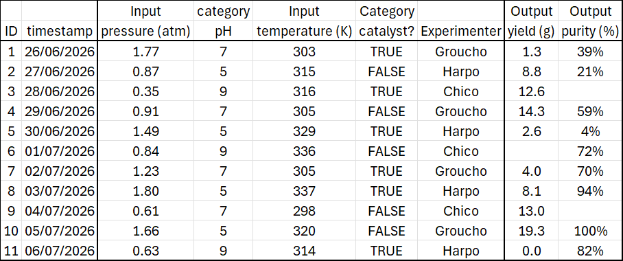
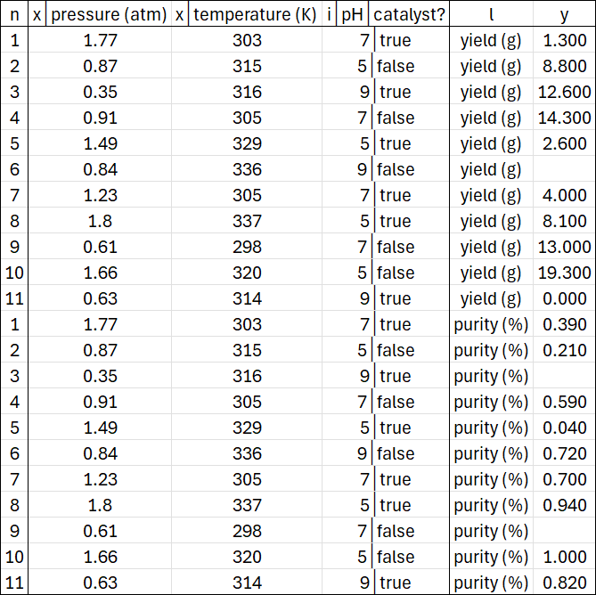
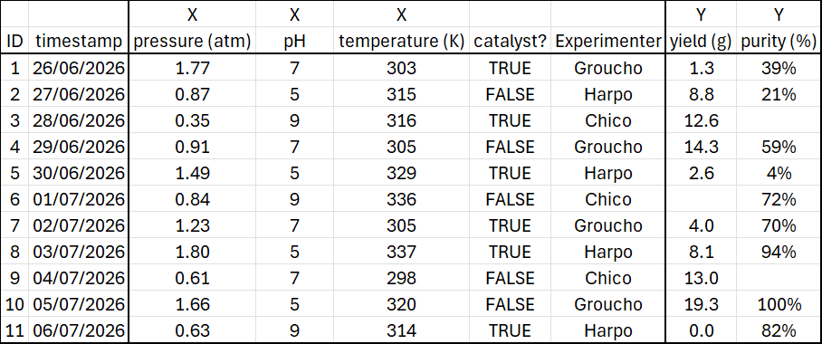
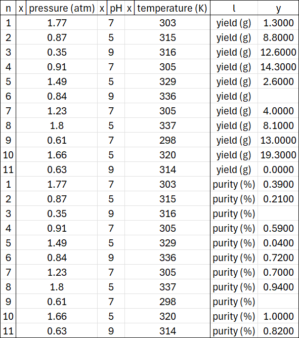
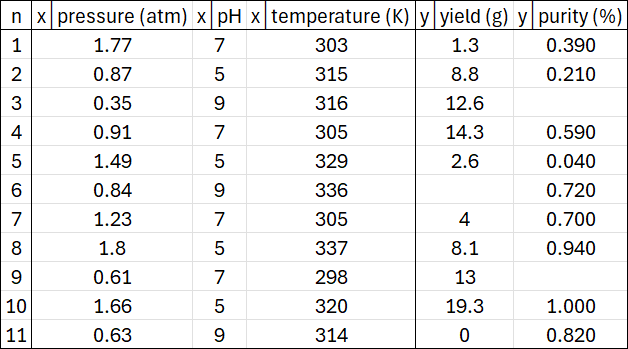

data§
Following base, the second package in RomCom’s alphabetical Plan is data. This is the gateway through which you pass your Experiments to RomCom.
The data package is mainly concerned with receiving information. There is little analytic output here, but you must negotiate the gateway to access the RomCom’s alphabetically subsequent analytic packages.
The heart of the data package is a subClass of Table called Design. Design is RomCom’s gatekeeper, validating each experiment.
Quickstart experiments§
Before delving further we show examples of valid Experiments, and the Designs they produce.
RomCom accepts experiments with Float inputs (x-axes), Category inputs (i-axes), and Float Outputs (y-axes). Every experiment must have at least one x-axis and at least one y-axis, where axis is simply synonymous with column. Category inputs may or may not be present as i-axes, Category outputs are not supported.
Here is an 'experiment.csv' with two x-axes 'pressure (atm)', 'temperature (K)', two i-axes 'pH', 'catalyst?', and two y-axes 'yield (g)', 'purity (%)'
{kind=link}

This experiment is not a Table, because it has two heads. The top head of any experiment is crucial to RomCom, as it contains the axisType telling RomCom how to interpret each column. If the experiment were a Table, RomCom would assume its head conjoined, taking the axisType as prefix to the leftmost con in each axis head.
Running this code:
design = Design.create('path', Table.conjoinHeads('experiment', 'path')
# Table.ext = '.csv' is implicit in Table file operations.
creates this Design in path
{kind=link}

The code converts experiment to a Table in path from which a Design is created in the same location.
The Table automatically casts pH and temperature (K) to Category data (because they are integers).
This is overridden by the axisType 'x' (synonymous with 'Input') which casts 'temperature (K)' to Float.
On the other hand 'pH' is of axisType 'i' (synonymous with 'category').
Provided the n-axis is leftmost, experiments may provide axes in any order. Within each axisType, the order of axes is preserved. However, the axisTypes in any Design appear from left to right in order n, x, i, l, y.
Every Design unpivots multiple y-axes into a single y-axis, the original y-axis names cast to Category in the l-axis.
Native Designs conjoin all i-axes into one.
As we shall shortly see there are also fat Designs, which unjoin all i-axes into J consecutive i-axes.
Both Table and Design retain null values. RomCom robustly ignores them in calculations.
Running the same code on a slightly amended experiment.csv
{kind=link}

creates a Design three x-axes, no i-axes, and two y-axes.
{kind=link}

Experiments§
RomCom is, broadly speaking, a data analysis library. To avoid overworking the word "data", we refer to the
subject of analysis as an experiment.
Put bluntly, this is just a .csv file containing outputs alongside the inputs which produced them.
The data package translates valid experiments into standardized designs.
Schemas§
The first thing RomCom must infer from a valid experiment is a schema of what each column represents (input, output, etc.). In RomCom terminology this means the experiment must communicate its axisTypes.
Axes and axisTypes§
As the math advances in later packages, evocative vocabulary will help. For this reason we call each column in an experiment an axis.
Every recognized axis has an axisType according to:
Design.axisLexicon: = {'index': 'n',
'input': 'x', 'in': 'x', 'continuous': 'x', 'float': 'x',
'category': 'i', 'cat': 'i', 'discrete': 'i', 'int': 'i', 'str': 'i',
'output-axis': 'l', 'y-axis': 'l', 'output axis': 'l', 'y axis': 'l',
'output': 'y', 'out':'y', 'map': 'y', 'func':'y', }
The axisLexicon is case-insensitive and any unrecognized axis is discarded – Designs contain only recognized axes.
RomCom recognizes then places each axisType as follows.
n-axis§
The row index. A single axis, recognized as the leftmost column in any experiment. Will be placed leftmost in a Design.
x-axis§
Continuous input. One or more axes recognized by axisLexicon. Will be placed to the right of the n-axis in a Design.
i-axis§
Categorical input. Zero or more axes recognized by axisLexicon. Will be placed to the right of the x-axes in a Design.
l-axis§
Output axis – see Output Pivoting. Zero or one axes recognized by axisLexicon. Will be placed to the left of the y-axis in a Design.
y-axis§
Continuous output. One or more axes recognized by axisLexicon. Will be upivoted to a single y-axis placed rightmost in a Design.
Output Pivoting§
The l-axis axisType enables two output formats called pivoted and unpivoted. RomCom can readily switch between these formats, but will not mix them.
Pivoting applies only to continuous outputs y-axis. RomCom will not pivot any inputs.
Every experiment is either pivoted or unpivoted, never both. Every Design is unpivoted, but can easily data.designs.Design.yPivot to a Table (an experiment but not a Design).
Pivoted§
The most common data format for users, a pivoted experiment usually has several y-axes, each a different output dimension (naturally, that is why we call them axes).
This format is relatively short and fat, and is selected by having no l-axis axis.
The instance method data.designs.Design.yPivot creates a pivoted Table such as
{kind=link}

Unpivoted§
RomCom’s native format, an unpivoted experiment has exactly one l-axis axis and exactly one y-axis axis.
The y-axis varies by row, according to the l-axis Category.
This format is relatively tall and thin, and is selected by having one l-axis axis. When this happens, RomCom assumes an unpivoted experiment and discards all but the leftmost y-axis axis
benchmarks§
The data.benchmarks module consists entirely of test functions, which are wrapped versions of SALib test functions. This module provides no core functionality to RomCom, only pre-packaged benchmarking facilities. In other words, it is an experiment factory, designed to test and exercise RomCom.
Each benchmark data.benchmarks.ishigami, data.benchmarks.sobolG, data.benchmarks.oakley2004 outputs a vector of 3 outputs. For a given vector function, each output component is computed with a different set of parameters.
There is a benchmark data.benchmarks.combo which is the 9 dimensional concatenation of data.benchmarks.ishigami, data.benchmarks.sobolG, data.benchmarks.oakley2004.
The benchmark data.benchmarks.combo is also available as data.benchmarks.categorized.
This is a scalar function which recognizes two i-axes, namely f in ('ish', 'sob', 'oak')
and p in (0, 1, 2), which which determine which of the 9 components of data.benchmarks.combo is computed.
designs§
The data.designs module is absolutely central to using RomCom. It is the conduit through which you will pass the data to be analysed. This must be structured and formatted correctly, as described in this section.